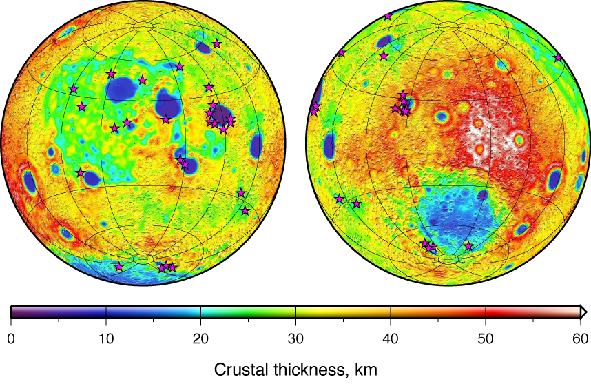
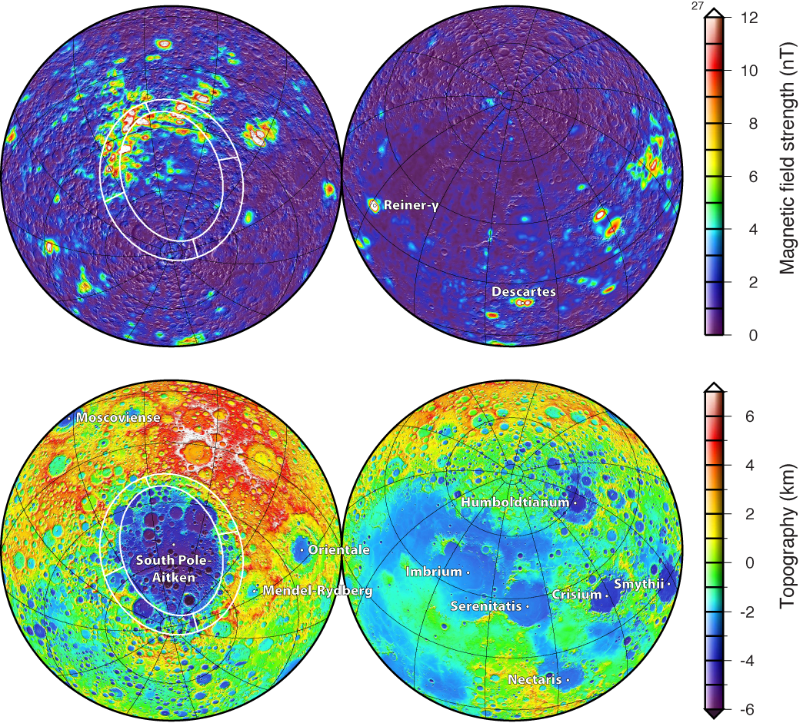
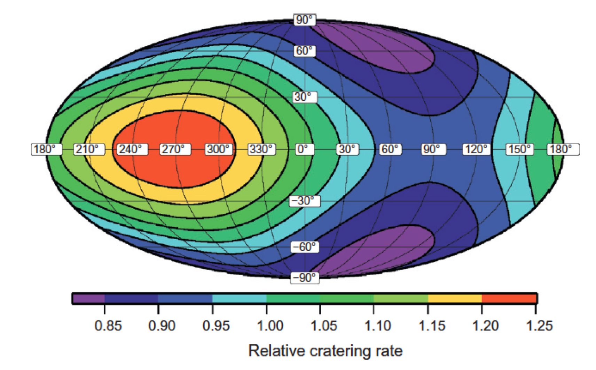
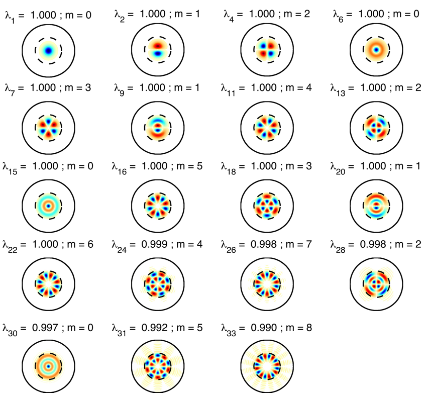

| HOME | CURRICULUM VITAE | PUBLICATIONS | RESEARCH |
Research Interests
Gravity and topography of the terrestrial planets
The interior structure of a planet can be investigated by the joint analysis of its gravitational field and topography. Detailed gravity and topography models are now available for Earth, Moon, Mars and Venus, and most analyses of these data have focussed on elucidating the structure of both the crust and lithosphere (Wieczorek 2015). Global crustal thickness maps have been constructed, and for the Moon and Mars, these have led to a better understanding of giant impact events. The densities of the major Martian volcanoes have been estimated (Belleguic et al. 2005, Grott and Wieczorek 2012), and these have been found to be consistent with the compositions of the basaltic Martian meteorites (Baratoux et al. 2014). In addition, the elastic thickness has been estimated at various locals on these planetary bodies, and this places constraints on how the heat flow has varied both in space and time.
Crustal thickness of the Moon from GRAIL gravity. The minimum crustal thickness is less than 1 km within the nearside Crisium (left) and farside Moscoviense (right) impact basins. Locations of olivine-rich materials mapped by the Japanese spacecraft Kaguya, which may represent materials excavated from the mantle of the Moon, are shown as stars. The largest concentrations of these materials are found surrounding the Crisium and Moscoviense impact basins where the crust is nearly absent.
The NASA discovery class mission GRAIL has revolutionized our understanding of the gravity field of the Moon. The resolution of the current gravity model is better than 20 km, and in some places approaches a few kilometers (Zuber et al. 2013). Analyses of these data have shown that the crust of the Moon is more highly fractured than ever imagined, that the crust of the Moon is thinner by almost 20 km than previously thought, and that the bulk refractory element composition of the Earth and Moon are similar (Wieczorek et al. 2013). One of the more surprising discoveries was that the thickness of the crust was found to approach zero within a few of the largest impact basins, suggesting that these impact events might have excavated materials from the lunar mantle. Numerical hydrocode modeling shows that the largest quantities of excavated mantle should be found between the main rim and interior peak ring, precisely where remote-sensing data show the presence of anomalous dunite deposits (Miljković et al. 2015).
Magnetic field of the Moon
The Moon does not posses a global dipolar magnetic field today, but analyses of lunar samples and magnetic field measurements made from orbit all show that the crust of the Moon is nonetheless strongly magnetized. This observation is difficult to reconcile given that it is hard to sustain a strong lunar dynamo given the small size of the Moon’s core, and since it is hard to generate strong magnetic field anomalies with the weak magnetic properties of lunar rocks. We have shown that changes in the Moon’s rotation rate that result from the angular momentum transfer during giant impact events could have powered a dynamo that lasted several 10s of thousands of years (Le Bars et al. 2011). These fields could account for the magnetic anomalies found in the interiors of some large impact basins. Alternatively, we have shown that progressive crystallization of the Moon’s iron core could have powered a dynamo lasting several billions of years (Laneuville et al. 2013, 2014), similar to how the Earth’s dynamo is powered today.
Magnetic and topographic signature of the South Pole-Aitken basin and opposite hemisphere of the Moon. Ellipses elongated in the north-south direction denote the inner basin floor and outer structural rim of the basin. The projectile that formed this crater hit the surface at an oblique angle, traveling from the south to north, and the highly magnetic projectile core materials were deposited on the northern rim of the basin. These materials were subsequently magnetized when they cooled in the presence of an internal magnetic field generated by the Moon's core.
In a related study, we have shown that the strongest magnetic anomalies on the Moon could be the result of highly magnetic extra-lunar materials that were delivered to the Moon’s surface during the formation of the largest impact craters. As an example, the largest concentration of magnetic anomalies are found just north of the 2000-km diameter farside South Pole-Aitken impact basin, and these are likely caused by core materials from a 200-km diameter differentiated projectile that collided with the Moon more than 4 billion years ago, and which were subsequently magnetized on the lunar surface (Wieczorek et al. 2012). A similar scenario might explain the even stronger magnetic anomalies that are found on Mars surrounding the even larger Borealis impact basin.
Impact cratering
Impact cratering is one of the major geologic processes that has affected the terrestrial planets. As a result of plate tectonics and weather on Earth, which erode these structures, it is necessary to turn to other planetary bodies to investigate the processes associated with the largest impacts events. The number of craters found on the surface of a planet is a reflection of the age of the surface, and by modeling the probabilities that near-Earth asteroids collide with the Moon, we have shown that important spatial variations in the impact-cratering rate will exist as a result of the Moon’s synchronous rotation about the Earth. More impacts occur on the western leading hemisphere than the trailing eastern hemisphere (Le Feuvre and Wieczorek, 2011), and neglecting this effect would give rise to dating errors of up to 500 million when using standard crater counting dating techniques. Impact events transfer enough momentum to the planets to significantly affect their rotation rates. We have shown that the largest impacts that occurred about 4 billion years ago could have unlocked temporarily the Moon from synchronous rotation (Wieczorek and Le Feuvre, 2009) for 10s of thousands of years, allowing both hemispheres to be seen from Earth and potentially switching the near and far side hemispheres at the time of relocking.
Relative cratering rate on the Moon for the current Earth-Moon separation. More impacts occur on the western leading hemisphere (left-hand side) than the eastern trailing hemisphere (right-hand side) as a result of the Moon’s synchronous rotation and the associated differences in relative velocity with respect to the impacting population. Fewer impacts occur near the poles than the equator since the orbits of most objects that collide with the Moon are in the plane of the ecliptic.
Any planet that is locked in synchronous rotation would be subjected to strong lateral variations in the impact-cratering rate, and we have shown that the distribution of ancient impact basins on Mercury implies that this planet was once in synchronous rotation about the Sun. The last large impact basin that formed on this planet about 3.8 billion years ago (the Caloris impact basin) was energetic enough to have unlocked this body from synchronous rotation, allowing it to be captured subsequently in the presently observed 3/2 spin-orbit resonance (where the planet spins three times about its axis for every two orbits about the Sun). We have shown that the 3/2 spin-orbit resonance generates lateral variations in temperature within the lithosphere, which in turn generates lithospheric stresses and long-wavelength topographic and gravitational anomalies (Tosi et al. 2015). Inverting for the elastic thickness at the time when these temperature variations were imposed, capture into the 3/2 resonance is constrained to have occurred late in Solar System history; less than about 4 billion years ago, consistent with the 3.8 Ga age of the Caloris impact.
Localized spectral analysis
It is common to express data on the sphere in spherical harmonic basis functions and to use their spectral properties to make inferences about the underlying process. For example, the cross-power spectra of gravity and topography can be used to invert for the elastic thickness, crustal thickness, and crustal density, the power spectrum of a planet's magnetic field depends upon the depth of magnetic sources, and the power spectrum of the cosmic microwave background radiation is dependent upon several parameters, such as the matter density of the universe and Hubble constant.
In many cases it is necessary to estimate the spectral properties of a process either in a specific region or by using only a subset of the full data set. This can be done by multiplying the data by one or several specially constructed localization windows, or by the convolution with spherical wavelets. We have developed an optimal set of localization windows on the sphere that are analogous to the Slepian windows used in traditional Cartesian multitaper analyses (Wieczorek and Simons, 2005, 2007; Simons et al. 2006). These windows allow the user to investigate the spectral properties of a specified region, all while controlling the amount a spectral leakage from regions outside of the analysis region. The tools for performing these analyses are available as part of the SHTOOLS open-source software package.
Optimal localization windows on the surface of the sphere. The first 16 orthogonal windows whose spatial power is optimally concentrated within a spherical cap of angular radius 30° (dotted circle), and yet bandlimited to a maximum spherical harmonic degree of L=29. Each non-zonal window possesses a twin that is rotated by m/90°. λ indicates the power of the function within the spherical cap divided by the total power of the function.
> Home
| Laboratoire Lagrange | Observatoire de la Côte d'Azur | L’Université de Nice-Sophia Antipolis |